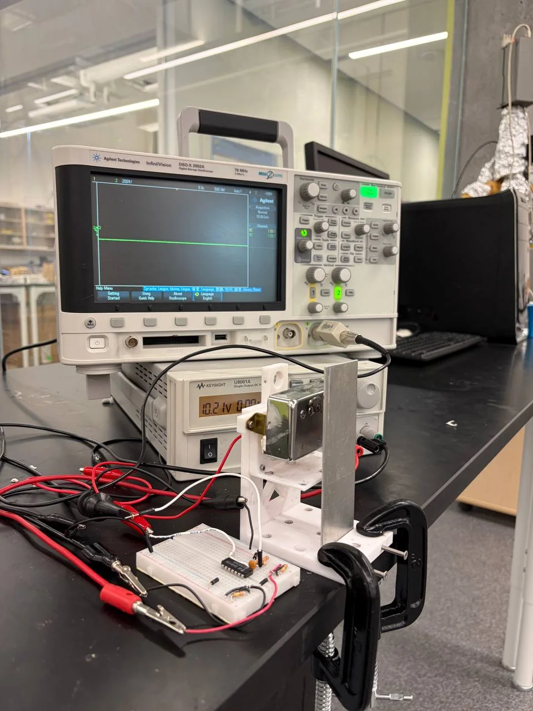
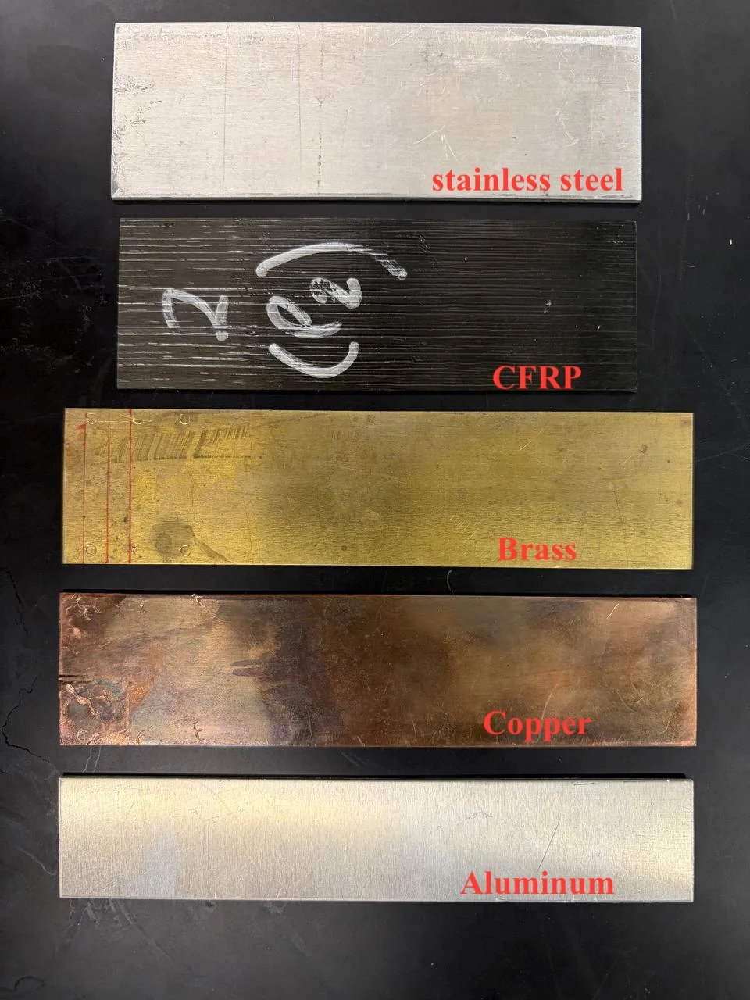
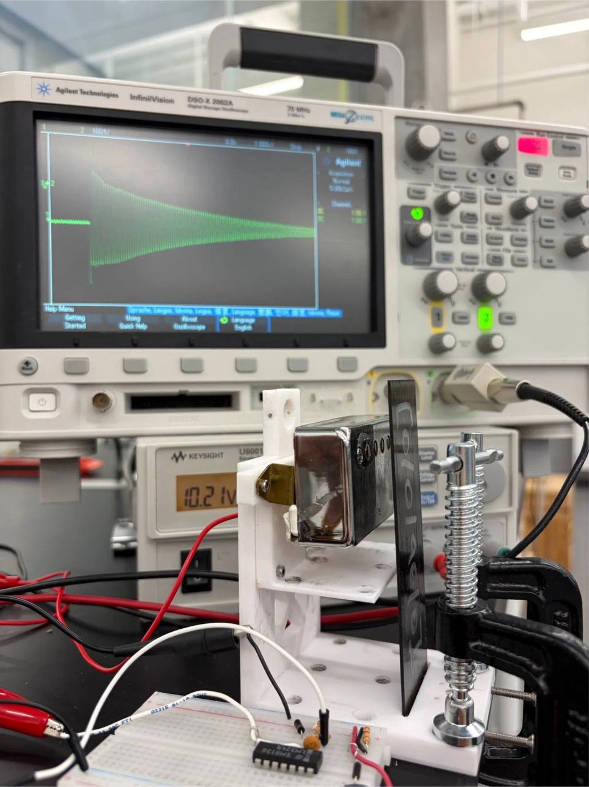
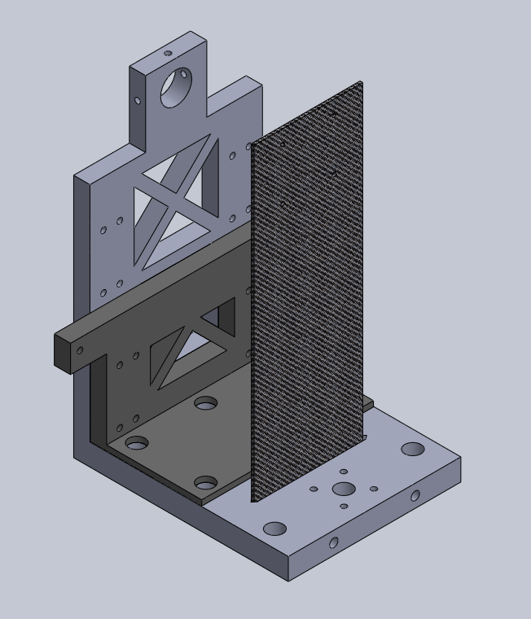
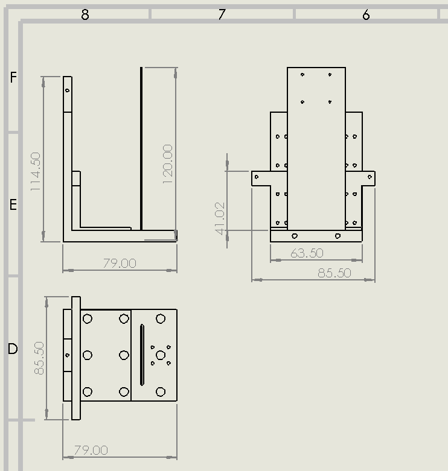
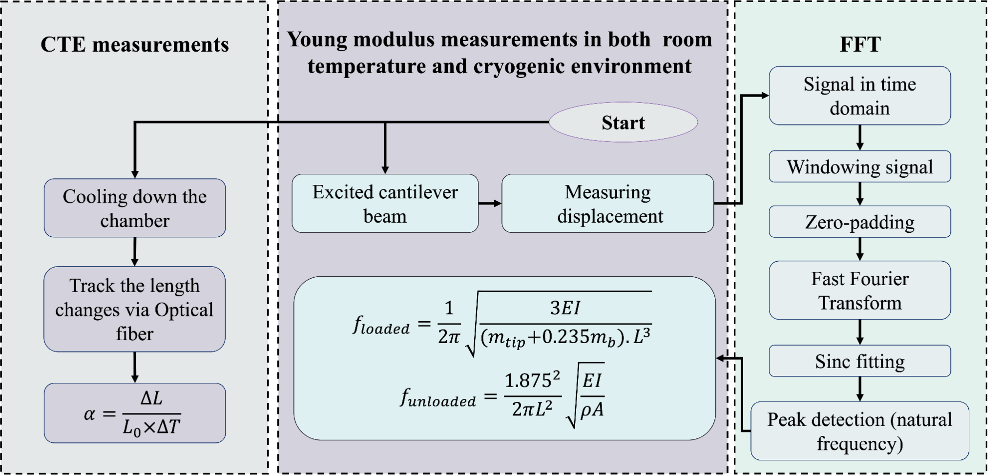
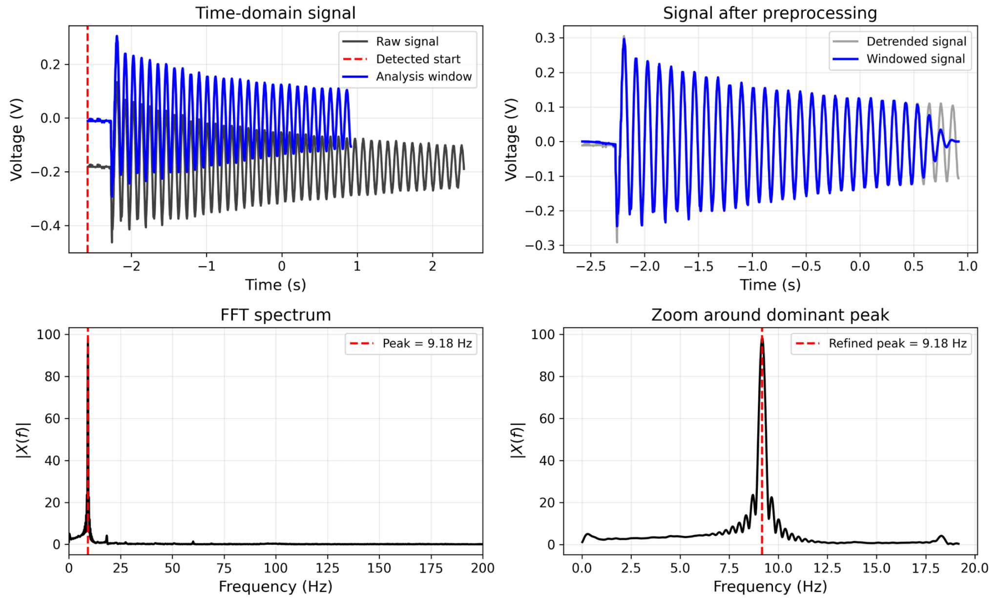
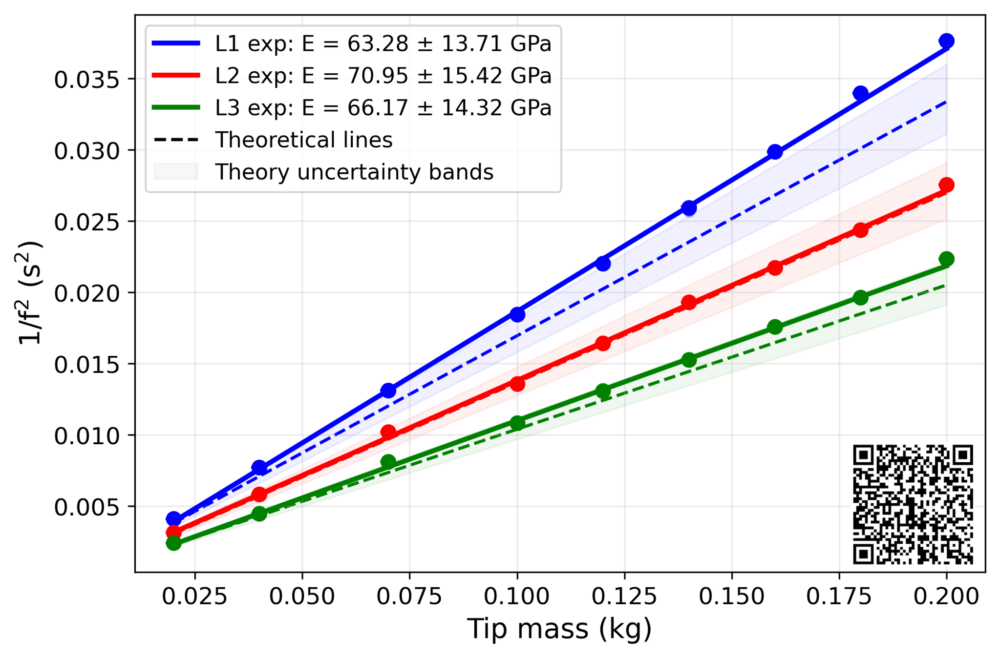
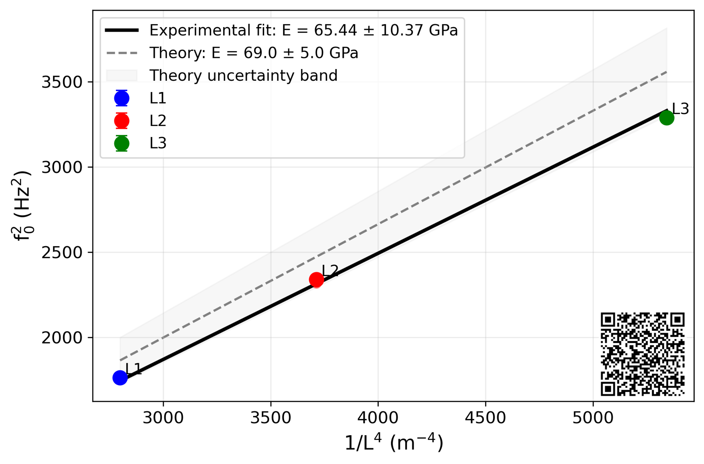
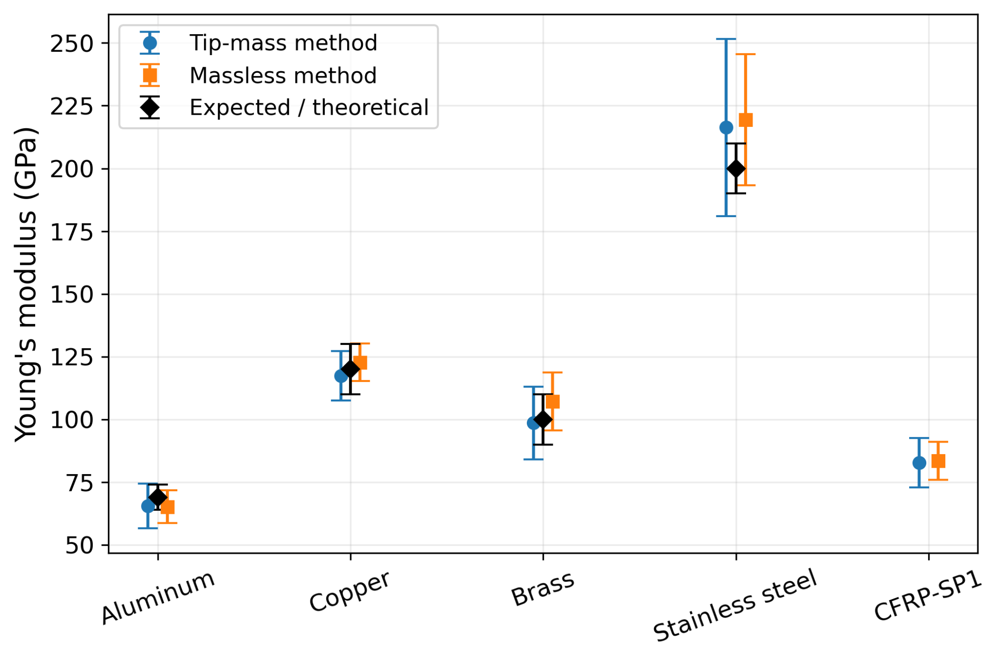

Tip-mass method
1f2
=
4π2L33E I
(mtip + 0.235mbeam)
For each beam length, multiple masses were added at the free end. A weighted linear fit of 1/f² against tip mass yields a slope inversely proportional to E.
Experimental mechanics · Signal processing · Materials characterization
Development and room-temperature validation of a non-contact modal-analysis method for CFRP and reference materials prior to cryogenic testing.

Research motivation
The target material was carbon-fibre-reinforced polymer, selected for future characterization under cryogenic conditions. Before transferring the experiment into a 4 K environment, I built and validated the complete room-temperature measurement framework using four reference materials with known elastic behaviour.
The project connects directly to the three-stage cryostat: this study establishes the sensing, excitation, frequency extraction, beam-theory inversion, and uncertainty methodology needed for later temperature-dependent CFRP measurements.
Test matrix
Aluminum, copper, brass, and stainless steel provided known baselines. CFRP-SP1 established the room-temperature composite reference point.

Experimental apparatus
The specimen is clamped as a cantilever, mechanically excited, and observed through a magnetic pickup connected to an oscilloscope.

Mechanical design
I designed the fixture, specimen interface, and pickup arrangement to support interchangeable samples and consistent measurement geometry.


Measurement workflow
The analysis preserves a clear link between the measured signal and the final material property.

Signal processing
The raw decay is isolated, detrended, tapered, zero-padded, transformed, and locally refined around the dominant spectral peak.

Independent validation
Agreement between loaded and unloaded analyses provides an internal check of both the test fixture and the computational pipeline.
For each beam length, multiple masses were added at the free end. A weighted linear fit of 1/f² against tip mass yields a slope inversely proportional to E.
With no attached mass, the squared fundamental frequency is fitted against 1/L⁴. This provides an independent estimate based on Euler–Bernoulli beam theory.
Validation case
Three lengths produce consistent loaded-method estimates, while the unloaded fit independently recovers the expected elastic modulus.


Multi-material result
The loaded and unloaded estimates agree with one another and reproduce the reference-material values within the reported uncertainty ranges.

Engineering interpretation
The reference materials validate the fixture and analysis pipeline over a broad stiffness range. The CFRP result establishes a room-temperature baseline while acknowledging the additional complexity introduced by anisotropy, fibre orientation, and laminate architecture.
Uncertainty analysis
Monte Carlo propagation combines geometric, frequency, repeatability, and regression uncertainty through the nonlinear beam equations.
Effective length, width, thickness, and specimen mass were sampled from their measurement uncertainties.
Trial-to-trial spread and local peak-refinement uncertainty were included.
Uncertainty in the fitted slope propagates directly into the modulus estimate.
The second moment of area, I = hb³/12, makes thickness uncertainty particularly influential.
Laboratory demonstration
The video documents the physical test and shows the damped vibration used for resonance-frequency extraction.
Next experimental stage
The validated workflow is intended to transfer into the three-stage cryostat for simultaneous characterization of multiple CFRP specimens as a function of temperature.
View the cryostat projectMy contribution
I carried out the full engineering and research workflow, from fixture design and apparatus development through measurement, computation, validation, documentation, and presentation.
Tools and methods
Documentation